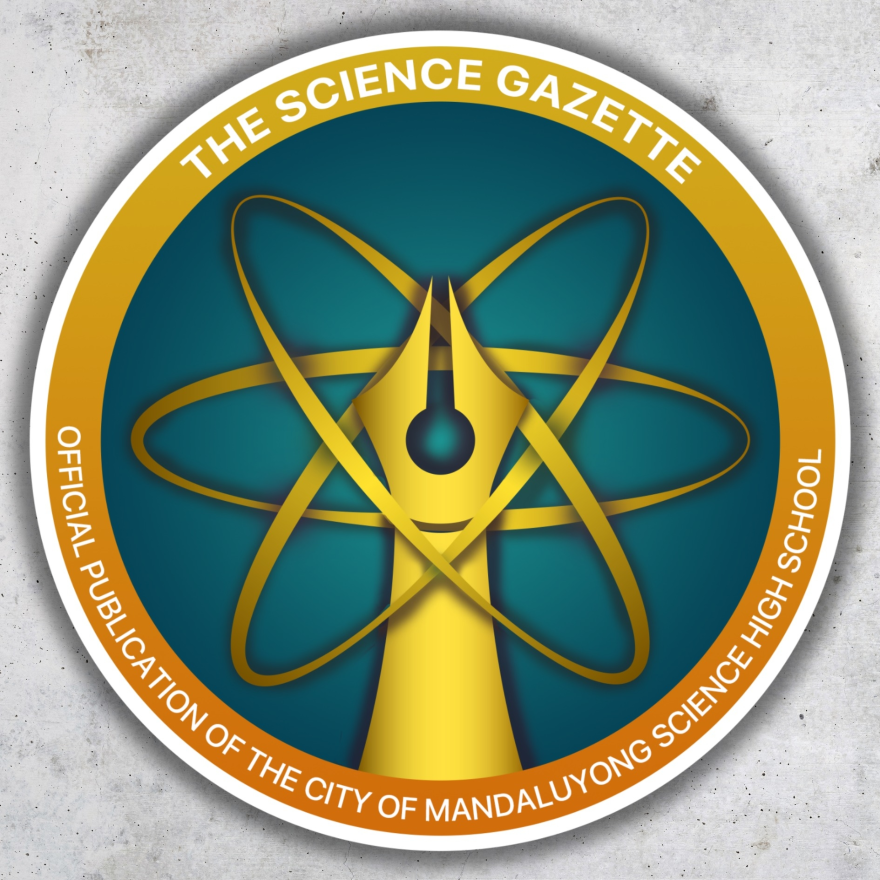

Science Gazette

Science Gazzets
Science Gazette is a journalist organization founded within CMSHS premises. They aim to provide public and easily accessible information, specifically pictures about events that occur within the school.